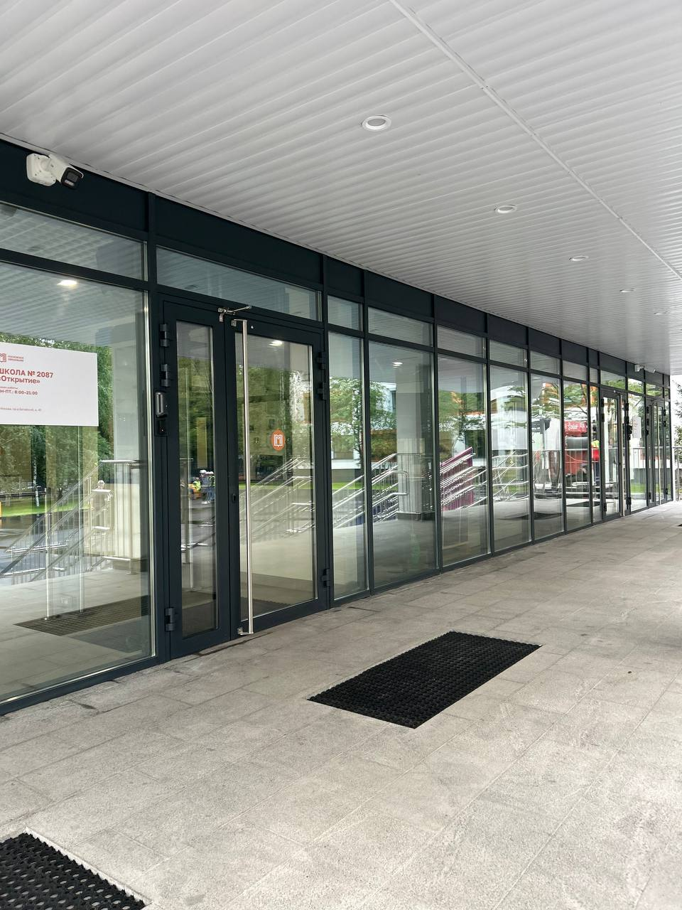
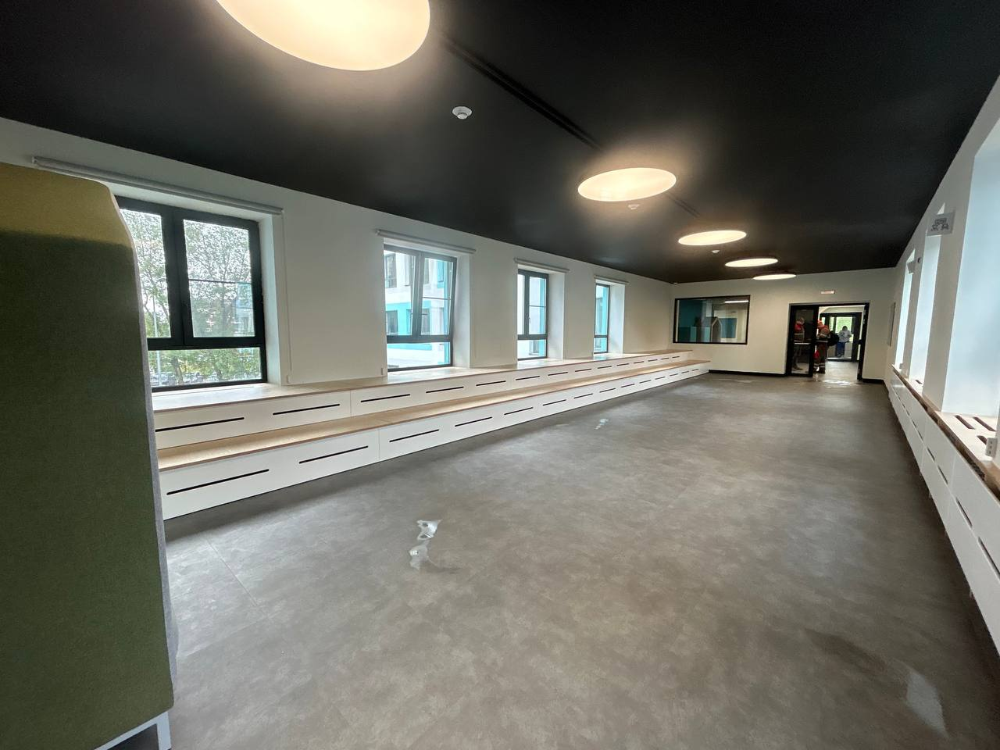
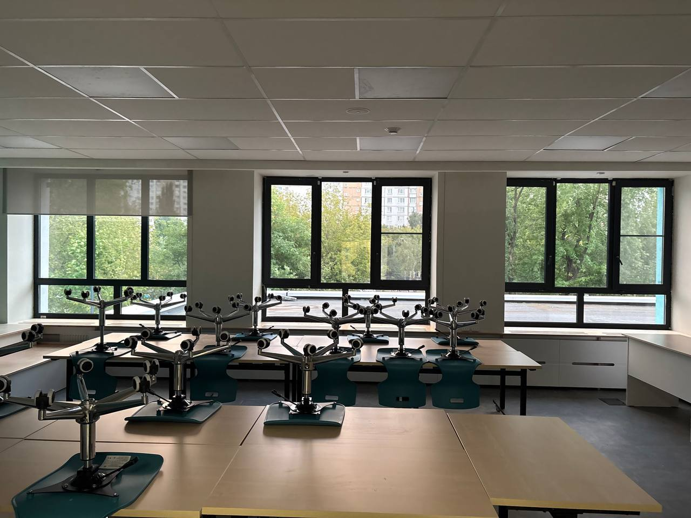
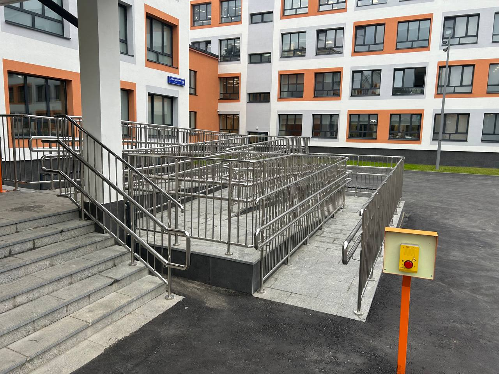

Окна и
остекление
ПВХ- и алюминиевые конструкции, окна для классов, коридоров, спортзалов и фасадов.
↗Производим и монтируем окна, двери, перила и решения для доступной среды на объектах образования и инфраструктуры.
Обсудить объект ↗
Константа помогает обновлять школьные и общественные здания с учётом современных требований к безопасности, комфорту и доступной среде.
Мы объединяем собственное производство, комплектацию и монтажную команду. Один ответственный ведёт задачу от технического задания до финальной приёмки.
Работаем в действующих зданиях: планируем логистику, соблюдаем требования безопасности и организуем работы так, чтобы объект продолжал жить.
Как мы работаем ↗Подбираем состав работ под проектную документацию, сроки и реальные условия площадки.
ПВХ- и алюминиевые конструкции, окна для классов, коридоров, спортзалов и фасадов.
↗Алюминиевые, противопожарные и технические двери для интенсивной эксплуатации.
↗Поручни, ограждения и пандусы для безопасной и доступной среды.
↗Решения под нестандартный проём, ТЗ и требования конкретного объекта.
↗Показываем не обещания, а изменения, которые видны на объекте.

ПОСЛЕТехнические двери, остекление и элементы доступной среды, собранные в единое решение для входа.
Запросить кейс ↗
ПОСЛЕОкна и ограждения помогают сделать маршруты внутри здания удобнее и безопаснее.
Запросить кейс ↗
ПОСЛЕСветопрозрачные конструкции и двери для ежедневной интенсивной эксплуатации.
Запросить кейс ↗
ПОСЛЕПандусы, поручни и ограждения для безопасного маршрута к зданию.
Запросить кейс ↗Соберём здесь подтверждённые объекты, фотографии и короткие технические истории.
Окна, двери и монтаж в рамках капитального ремонта.
Смотреть проекты ↗Собственное производство
Изготавливаем конструкции по проекту, проверяем качество на каждом этапе и доставляем готовое решение на объект.
О производстве ↗ ▶ Материалы с объекта
▶ Материалы с объектаСертификаты, благодарственные письма и презентация компании появятся здесь после подтверждения материалов.
Как мы работаем
Прозрачный процесс, один ответственный и понятные контрольные точки на всём пути.
Смотрим ТЗ, чертежи, сроки и ограничения действующего объекта.
Считаем объёмы, подбираем конструкцию и формируем понятный план.
Изготавливаем изделия и контролируем качество до отгрузки.
Организуем доставку, монтаж и финальную приёмку на объекте.
Вопросы и ответы
Окна, двери, технические двери, перила, пандусы и другие конструкции под задачу объекта.
Да. Готовы подключаться к проекту как производственно-монтажный подрядчик.
Да, после актуализации материалов разместим сертификаты, письма и подтверждённые кейсы.
Оставьте контакты и кратко опишите объект — вернёмся с уточняющими вопросами.
На связи
Пришлите задачу — подготовим первичную оценку и подскажем, какие материалы нужны для расчёта.
+7 915 015-66-05